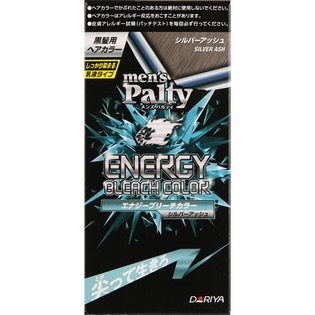
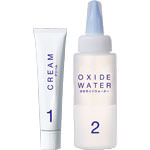

返回列表
产品名称：メンズパルティ エナジーブリーチカラー シルバーアッシュ

ダリヤ メンズパルティ エナジーブリーチカラー シルバーアッシュ ４０ｇ＋８０ｍｌ（医薬部外品）
メーカー ダリヤ
JANコード 4904651182213
商品の特徴
しっかり染まる
乳液タイプ
- 成分・分量
- ◇1剤
有効成分：塩酸2、4-ジアミノフェノキシエタノール、トルエン-2、5-ジアミン、メタアミノフェノール
その他の成分：亜硫酸ナトリウム、アルモンド油、アンモニア水、ウコンエキス、エタノール、エデト酸四ナトリウム四水塩、塩化ステアリルトリメチルアンモニウム、海藻エキス(1)、クララエキス(1)、ショウキョウエキス、ステアリン酸、精製水、セタノール、センキュウエキス、トウキエキス(1)、ニンジンエキス、ポリ塩化ジメチルメチレンピペリジニウム液、ポリオキシエチレンセチルエーテル、ポリオキシエチレンベヘニルエーテル、メチルフェニルポリシロキサン、メチルポリシロキサン、モノエタノールアミン、モモ葉エキス、硫酸マグネシウム、流動イソパラフィン、流動パラフィン、レゾルシン、ローヤルゼリーエキス、L-アスコルビン酸、1、3-ブチレングリコール、香料
◇2剤
有効成分：過酸化水素
その他の成分：エタノール、塩化ステアリルトリメチルアンモニウム、軽質流動イソパラフィン、水酸化カリウム、精製水、セタノール、パラフィン、パルミチン酸2-エチルヘキシル、ヒドロキシエタンジホスホン酸液、プロピレングリコール、ポリオキシエチレンステアリルエーテル、無水エタノール、ヤシ油脂肪酸グリセリル
- 用法及び用量
- 2剤に1剤を全量加えます。
ノズルを閉めて15秒ほどよく振り混ぜて、オーバーキャップをはずします。
乾いた髪にムラなく塗布し、20分放置します。
よく洗い流し、シャンプー・トリートメント等で仕上げます。